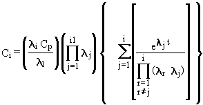

3.0 Computational Techniques
This chapter describes the techniques employed for
radionuclide decay chains, mass conservation, and the measured concentration
option.
3.1 Contaminant Degradation/Decay
Although many chemicals have degradation rates that
are different for dissolved and adsorbed phases, known degradation rates
in many cases are lacking for each. Therefore, MEPAS assumes first-order
degradation/decay for all contaminants. For radionuclides that produce
decay products, the riverine model transports the decay products like the
parent radionuclide. Once the parent reaches the receptor of concern, the
model corrects for radiological decay in a separate calculation and the
temporal distributions of the important decay products are computed using
the Bateman equation (Bateman 1910):

(3.1)
where
Cp = undecayed parent concentration (Ci mL-1)
l1 = radiological decay coefficient of the parent (s-1)
Ci = decayed concentration of the i-th member of the decay chain
(i = 1 for the parent, i = 2 for the first decay product, etc.) (Ci mL-1)
li = radiological
decay coefficient of the i-th member of the decay chain (s-1).
Performing the decay computation after transporting the parent radionuclide
to the receptor allows for more manageable computations.
By using the Bateman equation to compute concentrations
of decay products, the assumption is tacitly made that decay products travel
at the same speed as the parent. This assumption poses no complications
for the riverine pathway because no sediment adsorption is assumed to occur.
Thus, all constituents travel at the same speed as the river flow velocity.
When a contaminant has been disposed of, it spends
a portion of its time at the source prior to release into the environment,
and a portion of its time migrating in the environment (e.g., through a
river system). The time frame associated with the solutions to the advective-dispersive
equations with flux boundary conditions inherently includes the total time
(i.e., time the contaminant is at the source and in the environment). After
assessing a number of waste sites, it became apparent that this time frame
was not necessarily the appropriate time to use for degradation/decay computations.
The use of total simulation time is only appropriate if the contaminant
degrades/decays at the same rate at the source as in the environment. For
example, if a mass of radionuclide is placed in a landfill at the start
of a simulation, it will decay at the same rate at the source and in the
environment, and the use of total simulation time is appropriate. Under
other circumstances, use of the total simulation time (which is standard
practice) is inappropriate. Some examples are as follows:
Scenario 1: A production facility continually produces a waste at a
given contaminant level; the waste is continually disposed of at a waste
site (i.e., source). The contaminant is then released into the environment
to migrate.
Under this scenario, the source is continually replenished with new
waste at the original contaminant level. In effect, there is no apparent
reduction in the contaminant level at the source (i.e., no apparent degradation/decay).
Degradation/decay only occurs while the contaminant is in the environment.
Therefore, the time used in computing the degradation/decay should be equal
to the time in the environment only.
Scenario 2: A waste is disposed of at a waste facility, and its only significant
degradation occurs at the source (e.g., photodegradation); no significant
degradation occurs in the environment at this particular site.
Under this scenario, the waste degrades at the source but not in the
environment. The time used in computing degradation should only be the
time the contaminant remains at the source.
Scenario 3: A waste is disposed of at a waste facility, and the only
significant degradation occurs in the environment (e.g., microbial degradation);
no significant degradation occurs while the waste is in the waste site
proper at this particular site.
Under this scenario, the waste degrades in the environment but not at
the source. The time used in computing degradation should be the time in
the environment only.
Based on these discussions, three conditions for
calculating degradation/decay can exist. These are 1) degradation/decay
at the source and in the environment, 2) degradation/decay at the source
but not in the environment, and 3) degradation/decay in the environment
but not at the source. The MEPAS methodology can handle all of these situations,
because it allows the user to specify the correct conditions under which
the contaminants will degrade/decay.(a) For the first condition,
the total simulation time is used for computing degradation/decay, for
the second, only the time at the source is used, and for the third, only
the time in the environment is used.
When simulating degradation/decay through multiple
environmental media using the flux from the previous medium as a boundary
condition for the succeeding medium (i.e., sequential modeling of media),
only the travel times through the succeeding media should be included in
the subsequent degradation/decay computations. If the total simulation
time is included in the calculation, then degradation/decay in the previous
media will be accounted for more than once. MEPAS has been formulated to
assure that over accounting for decay does not occur.
In addition to degradation/decay, mass loss by volatilization
can also occur in the riverine environment. This loss is not computed by
the surface-water component, but is taken into account by the exposure
component of MEPAS. The mass loss is first order using the transit time
in the surface water between the source and the receptor location along
with a surface-water volatilization half-time, as described in Strenge
and Chamberlain (1995).
3.2 Surface Water Mass Balance at the Source
Because the solution to the surface-water
transport algorithm is exact and in a closed form, the analytical algorithm,
by definition, conserves mass as the contaminant migrates through the surface-water
environment. Note that Equation 2.8 conserves mass once the contaminant
has been released into the environment and does not account for the amount
of contaminant remaining in the waste site. As a check on the information
supplied by the investigator, MEPAS includes a contaminant mass balance
check at the source. The investigator either indicates the contaminant
mass entering the environment from the waste site or provides the necessary
information (e.g., climatology, soil properties and contaminant inventory)
so MEPAS can compute the contaminant mass flux from the waste site. The
mass balance check then sums the contaminant mass flux over time using
the following equation:

(3.2)
where
MT = total mass or activity being released from the waste site (g or Ci)
t = time at which the release from the waste site ends (s).
(a) Only one degradation rate can be specified; the degradation/decay
rate assumed at the source is equal to that in the environment, if degradation/decay
occurs in both. Different degradation rates are not possible using
the semianalytical solutions in the MEPAS methodology; mass balance would
be violated if different rates were identified. The user has to decide
a priori where degradation/decay will dominate (i.e., at the source, in
the environment, or in both), based on the characteristics at the site.
The total mass is then compared to the inventory at the
waste site; if the mass released is greater than the inventory, the time
duration associated with the release (t) is
adjusted until the mass of the contaminant being released equals the inventory
at the site. If the mass being released from the waste site is less than
the inventory, the time duration of the release is not adjusted.
3.3 Measured Concentrations in the Groundwater Environment
Contaminant levels are often measured
in surface-water bodies prior to a complete remedial investigation at a
waste site. Instances also occur where monitored contaminant levels are
available, but the nature, extent, and sometimes source of contamination
are unknown. A risk analysis methodology should be flexible enough to handle
those situations where only monitored information is available from which
to perform an analysis.
The MEPAS methodology allows and encourages
investigators to assess human health impacts using monitored data, whenever
possible. As opposed to relying only on transport modeling with its inherent
uncertainties to predict contaminant concentrations, actual observed concentrations
can be used in the assessment. The concept is that monitoring data are
usually more accurate than information resulting from a model simulation.
If an investigator selects the measured concentrations option, no transport
modeling is performed, and the investigator is required to supply a representative
concentration for each constituent being analyzed. This single concentration
value is assumed to be temporally constant, although first-order degradation/decay
can be included in the analysis.
If a measured contaminant level is
used, as opposed to modeling contaminant transport from the source to the
receptor, the investigator should understand the meaning of the measured
value and the implications associated with using a measured concentration.
For example, if a waste site is being assessed for radionuclides, measured
contaminant levels for heavy metals at an intake structure should not necessarily
be attributed to that particular waste site and indiscriminantly used for
that site's assessment. Also, an observed concentration implies that the
concentration is constant with respect to time; this assumption may be
conservative or nonconservative, depending on whether the contaminant plume
has passed or is still approaching the receptor location.
If monitoring information is available
at a receptor location and the nature, extent, and source of contamination
are known, then the monitored information can be used to back calculate
(i.e., calibrate) the transport modeling to ensure that the entire migrating
plume is appropriately included in the assessment. Following the transport
exercise, the monitored value is correlated to the simulated value, both
spatially and temporally. Input parameters are modified, as appropriate,
to ensure that the simulated and observed values match. Back calculation
is an extremely powerful tool that can be used to ensure that any assumptions
associated with the modeling scenario are appropriate. Failure to match
observed values using input parameters that physically make sense may indicate
that an important fate and transport process is not being captured by the
current modeling scenario (e.g., sediment adsorption).